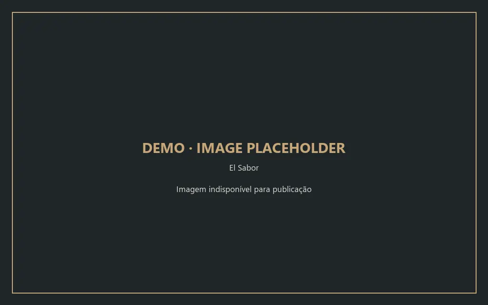
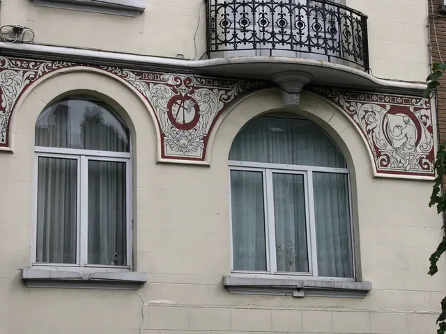

Imagem substituída por placeholder gráfico para a versão pública.
Imagem substituída por placeholder gráfico para a versão pública.
O brunch,
em Laeken.
No boulevard Émile Bockstael 255: omeletes, croques, msemen, café e chá de hortelã.


O cardápio fotografado por Faraowla’s Garden, set. 2026.
Nos pratos
Fotos publicadas por clientes na ficha do Google Maps. Os nomes exatos dos pratos não são conhecidos: damos apenas a descrição do que se vê.
255 bd Émile Bockstael 1020 Laeken, Bruxelas
Horários
| Todos os dias | 7 h – 23 h |
|---|
Segundo a ficha do Google Maps, consultada em 11/11/2026; não confirmados pelo restaurante. Feriados: horários possivelmente diferentes.
Telefone publicado na ficha do Google Maps (não verificado por uma segunda fonte): +32 491 94 28 46
